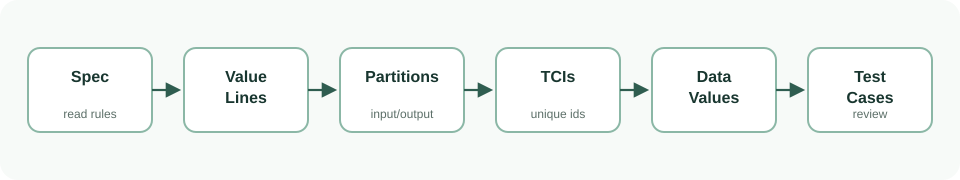

1. 用系统方法挑出少量有代表性的测试
测试设计不是把所有输入都试一遍，而是在规格中找出最容易暴露错误的位置。CS608 Q1 的黑盒题通常围绕两个问题展开：哪些值最值得测，哪些条件组合最值得测。BVA 回答第一个问题，Decision Table 回答第二个问题。
Exhaustive Testing
穷举测试就是测所有输入组合。考试要点是写出组合数量，并说明 test design time 和 test execution time 都不可行。
BVA
Boundary Value Analysis 专门测边界。它假设程序员最容易在边界条件写错，例如把 < 写成 <=。
Decision Table
Decision Table 专门测条件组合。它把输入条件写成 causes，把输出写成 effects，每个 feasible rule 都要测试。
BVA 怎么理解
BVA 的直觉是：规格把输入切成不同区间，而 bug 常出现在区间边缘。比如湿度 0..60 不需要 AC，61..100 需要 AC，那么 60 和 61 就是必须测的边界。
| 术语 | 中文理解 | 考试里要做什么 |
|---|---|---|
| Value line | 把一个输入参数的范围画成一条线 | 标出 natural range 和 specification-based partitions |
| Partition | 规格认为行为相同的一段值 | 写出输入分区和输出分区，包括错误分区 |
| Boundary value | 分区边缘的值 | 把每个非错误边界值列成 TCI |
| Output TCI | 期望输出本身也要被覆盖 | 如果某个输出没被边界测试覆盖，要加测试用例补上 |
DT 怎么理解
DT 的直觉是：有些 bug 不是单个输入边界导致的，而是多个条件组合导致的。比如系统是否开启、温度属于哪个范围，两者一起决定输出。DT 的每一列 rule，就是一种需要覆盖的组合。
| 术语 | 中文理解 | 考试里要做什么 |
|---|---|---|
| Cause | 输入条件，通常是 boolean 表达式 | 例如 isOn、t < 1、t >= 25 |
| Effect | 输出结果 | 例如 return HIGH、return LOW、return NONE |
| Candidate combination | 所有真假组合 | N 个 cause 理论上有 2^N 列 |
| Infeasible combination | 逻辑上不可能发生的组合 | 划掉并解释，例如 t<1 和 t>=25 不可能同时为真 |
| Rule | 一个可行组合 | 每个 rule 是一个 TCI，也需要一个 test case |
TCI / Data Values / Test Cases 是什么
学 BVA 和 DT 时，最后都会落到三类表格。它们不是额外负担，而是把你的测试设计讲清楚的固定格式。
| 表格 | 它回答的问题 | 在 BVA / DT 中的来源 |
|---|---|---|
| TCI table | 我承诺要覆盖哪些东西? | BVA 来自边界值和输出；DT 来自每个 feasible rule。 |
| Data Values table | 每个分区我准备用哪个具体值? | BVA 常列边界值和代表值；DT 常列能触发 rule 的代表输入。 |
| Test Cases table | 每个测试具体输入、期望输出、覆盖项是什么? | 每个 TC 都要写 expected result 和 covered TCI。 |
过关问答：先内容理解，再 past/sample paper 题，悬停或点击显示答案
内容理解题（先做 3 题）
核心答案（先确认概念）：输入空间通常太大甚至无限，穷举在时间和成本上不可行，所以要系统挑代表性测试。
为什么这是对的：Test design time 和 test execution time 两者都不可行：design 需要为每一组输入手写 expected result，数量爆炸后根本写不完；execution 需要实际运行所有用例，即使每条 1ns 跑完 2^128 条组合也远超宇宙年龄。2025 Summer 的 long greater(a,b) 题就是实例：两个 64-bit 参数合计 2^128 种组合，必须换 BVA 或 DT 做抽样。
题目语境怎么用：看到题面给具体数据类型（int、long、数组长度），先算数量级：一个 long 是 2^64，两个就是 2^128；数组长度 N 每个元素 M 种值就是 M^N。用数字直接说明为什么不可能每组合都测。
卷面写法：For exhaustive testing we would need 2^128 input combinations. Test design is infeasible—we cannot write an expected result for each. Test execution is infeasible—running that many tests exceeds practical time. Therefore we apply systematic sampling.
常见失分点：只说"too many"不写数量级；只提 execution 不提 design time；只说数量大但不解释为什么量大导致不可行。
核心答案（先确认概念）：边界附近最容易写错，例如 < 和 <= 搞反。
为什么这是对的：程序员写条件判断时，在阈值处把 < 写成 <= 或把 > 写成 >= 是极高发错区。Climate.determine() 里 temp<16 的边界 15→16 如果代码写 temp<=16，16 度本该不加热却加热了，这就是 BVA 要抓的典型 bug。同理 humidity=60 和 61 之间如果判断写错，AC 开关也会反转。
题目语境怎么用：Climate 题围绕 temp=16、humidity=60 找 just below/on/just above；其他 BVA 题也要先识别规格里所有的 threshold、minimum、maximum 或 between 边界词。
卷面写法：卷面用表格写 TCI、selected value、test case、expected result。每个 expected result 都必须来自 specification。边界值取 15/16/17（below/on/above 16）这种三件套。
常见失分点：不要只写"测边界"。只列输入没有 expected result 也不完整；题目说不含 error values 时，别把无效值混入有效边界表。
核心答案（先确认概念）：先定 coverage item，再选具体数据值，最后写包含 expected result 的 test case。
为什么这是对的：TCI 是"我承诺要覆盖什么"的清单——BVA 里是每个边界值和每个输出枚举，DT 里是每个 feasible rule。Data Values 是"我拿哪个具体数去触发这个 TCI"的选值表。Test Cases 才是最终的输入-期望-覆盖项三列表。顺序不能反：如果先列 test cases 再填 TCI，容易漏边界或做重复覆盖。Climate.determine() 的 TCI 表列了 BV1~BV8 加 OUT1~OUT4，再在 data values 里把 15/16/17 之类具体数分配进去，最后在 test cases 里检查每个 TC 的 covered TCI 列没有空白。
题目语境怎么用：BVA 题：先列 input/output partitions 找边界→写 TCI 编号→选 data values→填 test cases 并交叉引用 covered TCI。DT 题：先列 causes/effects→标 infeasible→每条 feasible rule 一个 TCI→给 rule 选代表值→写 test cases。
卷面写法：卷面至少写覆盖目标、具体数据/调用、expected result，并说明为什么这个测试覆盖目标。
常见失分点：不要只写"add tests"。没有 expected result 和覆盖目标，答案不可评分。
考试题目题（再做 5 题）
标准答案（先写结论）：因为数组长度和每个元素取值组合极大，设计 expected result 和执行所有组合都不可行。
为什么这是对的：Java int 数组最大长度约为 2^31-1（约 21 亿），且每个元素是 32-bit int，每个可以有 2^32 种值。即使只考虑数组长度 N=3，每个元素 10 种值，组合数已是 10^3=1000——对穷举来说不大，但题目说的是数组最大长度，意味着 N 可大到十亿级别，输入空间直接爆炸。Test design 要为每个组合算 expected result，execution 要跑完所有组合，两者都不现实。
题目语境怎么用：maxv 题的参数是 int[] a，输入空间 = 长度范围 × 元素取值范围。用极端长度说明穷举不可行，然后自然过渡到为什么需要 BVA。
卷面写法：写清晰 3 点：输入组合总数（量级），test design 不可行（写不完 expected result），test execution 不可行（跑不完）。每点用题面具体数字支撑。
常见失分点：不区分 design time 和 execution time 两个维度，笼统说"太多"；不引用题面具体类型算数量级。
标准答案（先写结论）：temp<16 且 humidity>60 同时成立时。
为什么这是对的：Climate.determine() 的输出由两个独立边界共同决定：temp=16 是 heating 阈值，humidity=60 是 AC 阈值。当两者同时越过各自阈值——temp 掉到 16 以下（冷），humidity 超过 60（湿）——系统需要同时开启 heating 和 AC，这就是 HEAT_AND_AC。验证这个输出需要 TC5: temp=15 + humidity=61，它不在前 4 个边界组合中自然出现，必须单独补。
题目语境怎么用：BVA 题里遇到输出枚举中有组合输出（如 HEAT_AND_AC），先在 TCI 里列为 OUT4，再检查已有 test cases 的 covered TCI 列——如果 OUT4 是空的，就需要新增一个 test case 专门覆盖它。
卷面写法：卷面用表格写 TCI、selected value、test case、expected result。每个 expected result 都必须来自 specification。HEAT_AND_AC 作为 output TCI 列出，并在 test cases 表中用单独一行给它分配具体输入值。
常见失分点：不要只写"测边界"。只列输入没有 expected result 也不完整；题目说不含 error values 时，别把无效值混入有效边界表。
标准答案（先写结论）：即使温度低，也应返回 NONE/off，因为系统开关关闭。
为什么这是对的：boilerSetting() 的规格明确：当 isOn=false 时，不论温度高低都返回 NONE。这体现了 DT 的核心逻辑——多个 causes 组合决定 effects。温度区间 causes（t<1、1<=t<25、t>=25）只在 isOn=true 时才有意义。isOn=false 那列 rule（R1）的 3 个温度 cause 全是 don't care (-)，意味着温度阈值被开关彻底 override。
题目语境怎么用：DT 里的 "don't care" 不是可测可不测，而是该 cause 对这条 rule 的 effect 无影响——测试时温度可以随便选，但必须靠 isOn=false 来验证返回 NONE。
卷面写法：为每条 feasible rule 给 test case，并写 expected result。R1（isOn=F）用一个代表温度如 -50 或 50 均可，因为 don't care 条件下任意合法温度都是等价的。
常见失分点：不要把 DT 写成普通输入列表。没有 causes/effects/rules/expected result，表就不完整。don't care 用 "-" 表示，不要填 T/F。
标准答案（先写结论）：短路条件编译成 bytecode-level branches；additional test 要让之前没 evaluated 的子条件被 evaluated。
为什么这是对的：Java 的 && 和 || 是短路运算：A && B 在字节码层面实际产生 4 条路径——A false（短路），A true + B false，A true + B true，再加整体表达式的另一侧分支。当 JaCoCo 标记某行为黄色（branch 未全覆盖），说明至少有一条 branch 没被任何 test 走到。Line 51 的 if (a && b && c) 有 3 个子条件，每个子条件在字节码层面都是一个 if 跳转，总共 6 条 branch 路径（true/false × 3），加上最后的 else 路径。
题目语境怎么用：看到 line red/yellow，要问什么输入能到达这条 statement 或走到缺失 branch；short-circuit 条件还可能产生 bytecode-level branch。
卷面写法：卷面写 coverage item、input/call、expected result、补上的 line/branch。不要只给 input。说明"此 test 使子条件 B 在 A 为 true 后首次被 evaluated，从而覆盖了 from-A-true-to-B-false 这条 branch"。
常见失分点：覆盖率不是正确性的替代品。每个新测试仍要有 specification 推出的 expected result。不要以为覆盖了所有 branch 就等于测对了功能。
标准答案（先写结论）：Static 直接 Numbers.isNeg(-1)；instance 要 create object、set value、call method、get result。
为什么这是对的：Static method 不依赖对象状态——Numbers.isNeg(x) 的行为只由参数 x 决定，调用时不需构造 Numbers 对象。Instance method 依赖对象内部状态：你需要先 new Numbers() 通过 constructor 或 setter 设置内部值，再调用 instance method，最后用 getter 观察结果。两者对应的 test case 写法完全不同：static 是单行调用，instance 是 create-set-call-get 四步序列。
题目语境怎么用：static method 可直接调用；class context 要 create object -> set state -> call method -> observe return/getter。
卷面写法：卷面写完整 method sequence，并说明每步如何设置或观察状态。若问 accessor methods，先列能读写状态的 public API。
常见失分点：不要直接改 private field，也不要只写一个输入值。测试必须通过公开接口形成状态。
本节过关门槛
2. 根据题面关键词区分 BVA 和 Decision Table
Q1 最容易丢分的地方，是把 BVA 当成 DT 做，或者把 DT 当成 BVA 做。先看题目关键词，再决定你的表格来源。

| 题目关键词 | 题型 | TCI 来自哪里 | 不要犯的错 |
|---|---|---|---|
Boundary Value Analysis, value lines, selected equivalence values, without errors |
BVA | 输入边界值 + 必要输出 TCI | 不要列所有输入组合；不要把非法值放进 without errors 的测试用例 |
Decision Tables, causes, effects, candidate combinations, infeasible combinations |
DT | 每个 feasible rule | 不要只测边界；不要忘记解释不可行组合 |
exhaustive testing is infeasible, test design time, test execution time |
穷举不可行说明题 | 不是 TCI 题 | 不要只写 "too many"；必须写数量级和原因 |
一句话判断
BVA 问的是"边界附近有没有错"；DT 问的是"这些条件组合起来输出对不对"。如果你先问清楚这句话，后面的表格就不会跑偏。
过关问答：先内容理解，再 past/sample paper 题，悬停或点击显示答案
内容理解题（先做 3 题）
核心答案（先确认概念）：优先想 BVA，找 lower/upper boundary 和 just below/on/just above。
为什么这是对的：数值范围题的 bug 集中在阈值附近。Climate.determine() 的 temp 范围 -130..60 被 16 切割为 heating/no-heating 两段，bug 最容易在 15/16 或 16/17 的跨段处暴露。如果代码把 <16 写成 <=16，16 的行为就错了——这正是 BVA 用 just below/on/above 三值覆盖的原因。反之如果你看到题面出现 isOn、enabled 等 boolean cause 配合数值区间，那就要往 DT 方向想。
题目语境怎么用：Climate 题围绕 temp=16、humidity=60；其他 BVA 题也要先找 threshold、minimum、maximum 或 between 的边界词。如果题目变量是单独的数值参数（无额外 boolean 开关），BVA 就是正确方向。
卷面写法：卷面用表格写 TCI、selected value、test case、expected result。每个 expected result 都必须来自 specification。只要题目关键词含 "Boundary Value"，TCI 来源就一定是 boundary values + output partitions。
常见失分点：不要只写"测边界"。只列输入没有 expected result 也不完整；题目说不含 error values 时，别把无效值混入有效边界表。
核心答案（先确认概念）：优先想 Decision Table，列 causes、effects、rules 和 infeasible combinations。
为什么这是对的：当题面既有温度区间又有 boolean 开关（如 boilerSetting(t,isOn)），单独测每个输入不够——必须验证 isOn=T + t<1、isOn=T + 1<=t<25、isOn=T + t>=25、isOn=F（don't care）这 4 种组合各自返回正确的 effect。这就是 DT 的 candidate combinations 到 feasible rules 的推导过程。PV.exportPower 的 enabled 和 nettPower 也是同样结构——两条 cause 组合输出一个 boolean effect。
题目语境怎么用：先列条件，再列输出，再把 feasible combinations 变成 rules；互斥条件要标 infeasible。比如 t<1 和 t>=25 不能同时为真，所以在 DT 里要用 F 标注它们在同一 rule 中不可同时为 T。
卷面写法：为每条 feasible rule 给 test case，并写 expected result。若做 random test，随机数据也要按这些 rules 生成和判定。DT 表必须含 causes 行、effects 行、rule 列、infeasible 标注。
常见失分点：不要把 DT 写成普通输入列表。没有 causes/effects/rules/expected result，表就不完整。
核心答案（先确认概念）：EP 先分行为相同的区域，BVA 再重点检查区域边界附近的值。
为什么这是对的：EP（Equivalence Partitioning）是 BVA 的前置步骤：Climate.determine() 的 temp 先按规格分成 heating required（-130..15）、no heating（16..60）、以及两个 error 分区，然后 BVA 在每个非错误分区的边缘抽出 -130、15、16、60 作为边界值。EP 告诉你在哪画线，BVA 告诉你在线上找哪些具体值。考试中两个概念经常一起出现：你先用 EP 列 input/output partitions，再用 BVA 从 partitions 找 boundary values 写成 TCI。
题目语境怎么用：Climate 题先列 temp 的 4 个 partition 和 humidity 的 4 个 partition，再标出哪些是 error、哪些是 valid，然后从 valid partition 的边界抽取 TCI。
卷面写法：卷面用表格写 TCI、selected value、test case、expected result。每个 expected result 都必须来自 specification。
常见失分点：不要只写"测边界"。只列输入没有 expected result 也不完整；题目说不含 error values 时，别把无效值混入有效边界表。
考试题目题（再做 5 题）
标准答案（先写结论）：核心是 temp=16、humidity=60 这类数值边界附近的错误风险。
为什么这是对的：Climate.determine(temp,humidity) 的输出确实由两个参数共同决定，但每个参数的贡献是独立阈值——temp 过不过 16 决定 heating 要不要，humidity 过不过 60 决定 AC 要不要，两者不是 DT 意义上的多 cause 组合逻辑。BVA 的测试策略是对每个参数的每个边界单独取 below/on/above，另一参数保持 nominal——这样才能把失败原因锁定到当前边界。如果做成 DT，你会浪费大量组合在 16×60=4 种情况上，而真正的风险只在 15→16 和 60→61 的跳跃处。
题目语境怎么用：Climate 题的题目关键词明确是 "Boundary Value Analysis"、"value lines"、"selected equivalence values"——这些全是 BVA 信号。题目还强调 "without errors"，这是 BVA 题的典型附加要求。
卷面写法：卷面用表格写 TCI、selected value、test case、expected result。每个 expected result 都必须来自 specification。解释时写：The risk is boundary-related (temp=16, humidity=60), not condition-combination-related, so BVA is the correct technique。
常见失分点：不要只写"测边界"。只列输入没有 expected result 也不完整；题目说不含 error values 时，别把无效值混入有效边界表。
标准答案（先写结论）：它有温度区间和 isOn 多个 causes 组合，对应 LOW/HIGH/NONE effects。
为什么这是对的：boilerSetting(t,isOn) 里 isOn 是一个开关 cause，它完全 override 温度逻辑——isOn=false 时所有温度区间都返回 NONE。这是典型的 DT 特征：一个 cause 的存在改变了其他 cause 是否生效。如果只用 BVA 测 t=0、t=1、t=24、t=25 等温度边界而不覆盖 isOn 组合，你会漏掉 isOn=false→NONE 这条规则。
题目语境怎么用：先列条件（isOn + 3 个温度区间 causes），再列输出（NONE/LOW/HIGH），再把 feasible combinations 变成 rules。温度区间互斥是 infeasible 的典型例子——t<1 和 t>=25 不可能同时为真，必须解释清楚。
卷面写法：为每条 feasible rule 给 test case，并写 expected result。若做 random test，随机数据也要按这些 rules 生成和判定。
常见失分点：不要把 DT 写成普通输入列表。没有 causes/effects/rules/expected result，表就不完整。
标准答案（先写结论）：题目直接给 enabled/nettPower 的 DT rules；随机只负责在每条 rule 内取具体值，例如 true rule 取 nettPower=37，false rule 取 nettPower=0。
为什么这是对的：PV.exportPower 的 DT 只有 2 条 causes（enabled boolean + nettPower>0 boolean），共 4 种候选组合，其中 1 种 infeasible（enabled=false 时 nettPower 无意义），剩 3 条 feasible rules。Random testing 不是胡乱随机——它的"随机"只在每条 rule 的等价区内选具体数字，rule 本身（即覆盖项）是由 DT 定好的。这防止了随机只测 enabled=true 区间而永远不碰 enabled=false。
题目语境怎么用：先列 DT rules，再给每条 rule 写 random value generation criteria（如 nettPower 在 1..100 随机取正），然后写 oracle（根据 DT rule 判定 expected true/false），最后写 completion condition（每条 rule 覆盖 N 次后停止）。
卷面写法：为每条 feasible rule 给 test case，并写 expected result。若做 random test，随机数据也要按这些 rules 生成和判定。
常见失分点：不要把 DT 写成普通输入列表。没有 causes/effects/rules/expected result，表就不完整。随机测试缺少 oracle 时只能发现 crash，不能发现逻辑错误。
标准答案（先写结论）：Static 直接 Numbers.isNeg(-1)；instance 要 create object、set value、call method、get result。
为什么这是对的：static method 的行为完全由显式参数决定，不依赖隐藏状态，所以一行调用即完成测试。instance method 如 Numbers.setValue(5).isPrime() 依赖之前 setValue 写入的内部状态，测试必须分步：Numbers n = new Numbers(); n.setValue(5); boolean r = n.isPrime(); 如果跳过 setValue，isPrime 读的是未初始化的字段，结果不可靠。
题目语境怎么用：static method 可直接调用；class context 要 create object -> set state -> call method -> observe return/getter。每个 test case 写完整调用序列，不能只给"输入值"。
卷面写法：卷面写完整 method sequence，并说明每步如何设置或观察状态。若问 accessor methods，先列能读写状态的 public API。
常见失分点：不要直接改 private field，也不要只写一个输入值。测试必须通过公开接口形成状态。
标准答案（先写结论）：用 public setter/constructor 设置 brightness 和 override，调用 decide()，再用 getter 检查 power state。
为什么这是对的：Lighting.decide() 的行为依赖两个内部状态——brightness 和 override 标志位。这两个字段很可能是 private 的，所以不能用直接赋值。正确路径：Lighting l = new Lighting(); l.setBrightness(80); l.setOverride(false); PowerState s = l.decide(); 然后 assert s 的值。如果 override 为 true，decide 可能直接返回 ON 而忽略 brightness，这正是你需要通过 setter 序列来验证的组合场景。
题目语境怎么用：class context 题先读 specification 找出所有 public setter/constructor 和 getter/method，再设计 create-set-call-get 调用链。每题至少覆盖每种内部状态组合对应的输出。
卷面写法：卷面写完整 method sequence，并说明每步如何设置或观察状态。若问 accessor methods，先列能读写状态的 public API。
常见失分点：不要直接改 private field，也不要只写一个输入值。测试必须通过公开接口形成状态。
本节过关门槛
3. 2023-2025 年 Q1 考法变化
下面这张表不是为了背题，而是为了看出重复结构：Q1(a) 基本稳定考穷举不可行；Q1(b)(c) 在 DT 和 BVA 之间切换。
| 年份 | Q1(a) | Q1(b)(c) | 主攻题型 |
|---|---|---|---|
| 2023 Summer | int[] maxv 穷举不可行 |
boilerSetting(t,isOn) |
Decision Table + TCI + Test Cases |
| 2024 Summer | long maxv(x,y,z) 穷举不可行 |
fanSetting(temp,isOn) |
Decision Table + infeasible combinations |
| 2025 Summer | long greater(a,b) 穷举不可行 |
Climate.determine(temp,humidity) |
BVA without errors + output TCI |
| 2025 Autumn | 1M records * 128 bytes 的数据库状态数 | Braking.evaluate(battLevel,bPressure) |
BVA without errors + no duplicate coverage |
过关问答：先内容理解，再 past/sample paper 题，悬停或点击显示答案
内容理解题（先做 3 题）
核心答案（先确认概念）：用来判断 Q1 在不同年份更偏 BVA、DT 还是 exhaustive explanation，并准备对应表格。
为什么这是对的：从 2023 到 2025 的 Q1 变化看，exhaustive explanation 是每年的固定开场白，但(b)(c)题在 DT 和 BVA 之间轮换。2023（boilerSetting）和 2024（fanSetting）是 DT 年，2025（Climate.determine 和 Braking.evaluate）是 BVA 年。考试时先扫题面关键词——如果看到 causes/effects/infeasible 就套 DT 模板，看到 boundary/value line/selected equivalence values 就套 BVA 模板。不要背某一年答案的数字，要背表格结构。
题目语境怎么用：复习时用 DT 年的 boilerSetting 练 DT 模板（causes→effects→candidate→infeasible→rules→TCI→TC），用 BVA 年的 Climate 练 BVA 模板（partitions→boundaries→TCI→data values→TC）。两类题都练过，考试时就能快速识别。
卷面写法：卷面用对应题型模板写完整表格，不要混用——BVA 题不需要 causes/effects，DT 题不需要 value line。
常见失分点：千万不要在 BVA 题里套 DT 模板（写一堆 cause/effect），也不要在 DT 题里只列边界值而忽略 condition combinations。
核心答案（先确认概念）：它能显示 Q1 不是单一模板，而是在黑盒方法之间切换。
为什么这是对的：如果只看 2025 Summer 的 Climate.determine 就以为 Q1 永远考 BVA，那遇到 2023 的 boilerSetting DT 题就会无从下手。跨年对比揭示了一个稳定模式：Q1(a) 每年都是穷举不可行说明（考点：数量级 + test design/execution time），Q1(b)(c) 则在 DT 和 BVA 两种黑盒技术间交替。这意味着你必须同时会 BVA 和 DT 两套方法以及它们的区别，才能在考场上应变。
题目语境怎么用：把题面给的输入、条件、代码行或类状态拆成可测试目标，再给具体调用和期望结果。遇到新的题面先对号入座——是穷举不可行？是 BVA？还是 DT？三选一。
卷面写法：卷面至少写覆盖目标、具体数据/调用、expected result，并说明为什么这个测试覆盖目标。
常见失分点：不要只写"add tests"。没有 expected result 和覆盖目标，答案不可评分。
核心答案（先确认概念）：抽取题型关键词、输出表格结构和 expected result 写法，而不是死背数据。
为什么这是对的：2023 boilerSetting DT 的规则 R1~R4 不会原样出现在 2024 或 2025 的考题中，但 DT 的 causes→effects→rules→infeasible→test cases 这个五步结构是通用的。同样，2025 Climate 的 BVA 边界值 -130/15/16/60 不会重复，但 partitions→boundaries→TCI→data values→test cases→output TCI 这条链是 BVA 题的通用模板。考试时你要把旧题的表格框架搬过去，用新题的 specification 填新内容。
题目语境怎么用：把题面给的输入、条件、代码行或类状态拆成可测试目标，再给具体调用和期望结果。旧题是练"用题面填模板"的能力，不是练背模板内容。
卷面写法：卷面至少写覆盖目标、具体数据/调用、expected result，并说明为什么这个测试覆盖目标。
常见失分点：不要只写"add tests"。没有 expected result 和覆盖目标，答案不可评分。
考试题目题（再做 5 题）
标准答案（先写结论）：2023 偏 exhaustive + boilerSetting DT；2025 偏 exhaustive/input-output partitions + Climate.determine BVA。
为什么这是对的：2023 Q1 的(b)(c)要求你做 DT：列 causes（温度区间 + isOn），判 infeasible（温度区间互斥），写 rules，最后把每条 rule 映射到 test case。2025 的(b)(c)要求你做 BVA：画 value lines，列 input/output partitions，标 boundary values 为 TCI，补 output TCI，最后写 test cases 并确保每行覆盖至少一个新 TCI。两个 Q1 的开头(a)部分都是 exhaustive infeasibility 说明，但 body 部分的方法完全不同——你不能用同一套表格模板答这两种题。
题目语境怎么用：考前明确每个年份的题型归属，避免考场上把 DT 题当 BVA 做——看到 boolean 开关 + 数值区间的组合大概率是 DT，看到纯数值参数的阈值切割大概率是 BVA。
卷面写法：2023 类 DT 题：decision table 表 + TCI 表（rules 编号）+ test cases 表。2025 类 BVA 题：partitions 表 + TCI 表（boundary 编号）+ data values 表 + test cases 表 + review 句。
常见失分点：不要只写"测边界"。只列输入没有 expected result 也不完整；题目说不含 error values 时，别把无效值混入有效边界表。
标准答案（先写结论）：BVA 不只出在气候控制，也会出在数据库/业务规则方法上；关键仍是边界和 partitions。
为什么这是对的：2025 Autumn 的 Braking.evaluate(battLevel,bPressure) 不是温度不是湿度，而是电池电量和制动压力——但它的 BVA 结构和 Climate.determine 完全一样：两个输入参数各有取值范围和阈值，输出有组合枚举。这证明 BVA 不挑领域：只要 specification 定义了一个连续范围上的阈值，你就要画 value line、分 partition、取 below/on/above boundary values。数据库记录数（1M records * 128 bytes）的 exhaustive reasoning 也证明穷举论据不限于方法参数。
题目语境怎么用：遇到陌生领域的 BVA 题不要慌——先找输入参数的 natural range 和 specification-based range，标出所有阈值，然后按模板走。
卷面写法：卷面用表格写 TCI、selected value、test case、expected result。每个 expected result 都必须来自 specification。数据库穷举例：1M records × 128 bytes = 128MB of state，穷举所有状态不可行。
常见失分点：不要只写"测边界"。只列输入没有 expected result 也不完整；题目说不含 error values 时，别把无效值混入有效边界表。
标准答案（先写结论）：对照题面关键词：组合条件走 DT，数值阈值边界走 BVA。
为什么这是对的：boilerSetting 题里 isOn 是一个独立 cause，它和温度 causes 是正交关系——isOn=false 时温度 thresholds 全变 don't care。这种"一个条件开关改变所有其他条件的生效规则"是 DT 的核心信号。Climate 题里 temp 和 humidity 是独立阈值——16 和 60 各自决定各自的分区，不需要 cause-effect 组合推理。对照练完后，考试时看题面三秒就能判断：有关键词 "causes/effects" 或规格里有 boolean 开关 → DT；有关键词 "boundary/value line/partition" 且纯数值阈值 → BVA。
题目语境怎么用：Climate 题围绕 temp=16、humidity=60；boilerSetting 题围绕 isOn + 温度区间。对照练的核心不是背值而是练"读题→判题型→选模板"的决策速度。
卷面写法：卷面用表格写 TCI、selected value、test case、expected result。BVA 题多一步 data values；DT 题多一步 causes/effects 和 infeasible 说明。
常见失分点：不要把 DT 和 BVA 的表格格式混用——DT 不需要 value line 或 below/on/above 值；BVA 不需要 causes/effects 行。
标准答案（先写结论）：enabled=true 且 nettPower>0 时随机取正数 expected true；enabled=false 或 nettPower<=0 expected false。
为什么这是对的：PV.exportPower 的 3 条 feasible rules 是 DT 定好的，random testing 不在规则层面随机，而在规则内的数值层面随机。Rule 1（enabled=true, nettPower>0 → true）：从 1..MAX 随机取 nettPower，expected 永远 true。Rule 2（enabled=false, nettPower<=0 → false）：随机取 nettPower≤0。Rule 3（enabled=false, nettPower>0 → false 或等价规则）：随机取对应值。每条 rule 至少随机执行 N 次（completion condition），每次都有 oracle（来自 DT 的 expected effect）。
题目语境怎么用：先列 DT rules，再给每条 rule 定义：random generation range（如 nettPower 在 1..1000 均匀随机）、oracle（DT effect）、completion（每 rule 跑 50 次）。伪代码里每次循环随机取样并 assert effect。
卷面写法：为每条 feasible rule 给 test case，并写 expected result。若做 random test，随机数据也要按这些 rules 生成和判定。
常见失分点：不要把 DT 写成普通输入列表。没有 causes/effects/rules/expected result，表就不完整。
标准答案（先写结论）：随机给 x 后，用整数平方根反算验证 r*r==x，不能用被测函数输出当 expected。
为什么这是对的：isSquare 的 specification 是数学定义：存在整数 n 使得 n×n=x。oracle 不能直接调 isSquare 看返回值（循环论证），而要用独立验证：取 Math.sqrt(x) 的整数部分 n，检查 n*n==x。这就是利用数学性质做 oracle——与 DT rule oracle（查表得 expected effect）不同的第三种 oracle 来源。Random testing 三个要素缺一不可：data generation range + oracle + completion condition。
题目语境怎么用：oracle 可来自 specification、decision table、equivalence partitions 或数学性质；completion 可按每个 partition/rule 覆盖次数定义。
卷面写法：卷面分三段写：随机生成范围，expected result/oracle，停止条件。伪代码里每次随机调用后都要 assert。
常见失分点：只写 loop many times 不够。没有 oracle 的随机测试只能发现 crash，不能证明功能正确。
本节过关门槛
4. 从经典题拆解完整答题表格
这一段开始拿题目练。顺序是先做 5 分穷举解释，再做 2025 Summer 的 BVA 大题，最后用 2023 Summer 的 DT 题说明另一种 Q1。
经典题 1：穷举测试为什么不可行
2025 Summer 给出 long greater(long a, long b)。Java long 是 64-bit，所以一个参数有 2^64 个可能值，两个参数共有：
2^64 * 2^64 = 2^128 input combinations
5 分答案模板
For exhaustive testing, we would need one test case for every possible input combination.
Each long parameter has 2^64 possible values, so two long parameters give 2^128 input combinations.
This is infeasible for two reasons. First, test design is infeasible because each test case needs input data and an expected result. Second, test execution is infeasible because running 2^128 tests would take an unrealistic amount of time.
Therefore exhaustive testing is not practical; we need systematic sampling techniques such as BVA or Decision Table testing.
过关问答：先内容理解，再 past/sample paper 题，悬停或点击显示答案
内容理解题（先做 3 题）
核心答案（先确认概念）：看题面如何转成 TCI、data values、test cases 和 expected results。
为什么这是对的：Worked example 的价值不在具体数字（如 -130 或 16），而在"specification → table"的转化过程。Climate.determine 题先读规格找出两个参数的 range 和阈值（temp: -130..60 切在 16；humidity: 0..100 切在 60），然后列出 input/output partitions，从合法 partition 的边缘抽 boundary values 编号为 TCI，再选具体代表值，最后按"每行至少覆盖一个新 TCI"的原则编排 test cases。这个五步流水线是所有 BVA/DT 题的通用工作流。
题目语境怎么用：把题面给的输入、条件、代码行或类状态拆成可测试目标，再给具体调用和期望结果。先分区再选值再编用例——这个顺序比具体数据重要。
卷面写法：卷面至少写覆盖目标、具体数据/调用、expected result，并说明为什么这个测试覆盖目标。
常见失分点：不要只写"add tests"。没有 expected result 和覆盖目标，答案不可评分。
核心答案（先确认概念）：每个 boundary 为什么选这些值，以及 nominal value 怎样避免组合爆炸。
为什么这是对的：Climate 题测 temp=16 边界时 humidity 填 nominal 值 50——这是 BVA 的关键设计原则：每次只推一个边界，其他参数保持普通合法值。如果同时测 temp=15 和 humidity=61，你会得到 HEAT_AND_AC，此时如果出错无法判断是 temp 边界还是 humidity 边界导致的。TC5 虽然也必须测 HEAT_AND_AC 输出，但它是在 output TCI 驱动下故意打破"一次只推一个边界"原则的例外。
题目语境怎么用：BVA 设计时要区分两类测试：input boundary TC（一次推一个边界，另一参数用 nominal）和 output coverage TC（允许同时推多个边界以触发特定输出枚举值）。前 4 个 TC 是前者，TC5 是后者。
卷面写法：卷面用表格写 TCI、selected value、test case、expected result。每个 expected result 都必须来自 specification。在 review 句说明前 4 个 TC 一次只推一个边界，TC5 补输出覆盖。
常见失分点：不要只写"测边界"。只列输入没有 expected result 也不完整；题目说不含 error values 时，别把无效值混入有效边界表。
核心答案（先确认概念）：conditions/actions 怎样变成 rules，哪些组合 infeasible，哪些 rule 需要 test case。
为什么这是对的：boilerSetting 的 4 个 causes 理论上有 2^4=16 种组合，但温度区间的 3 个 causes 是互斥的——它们最多一个为 T。靠这个互斥约束，16 种候选被砍到 4 条 feasible rules（R1~R4）。每一条 feasible rule 是一个 TCI 和一个 test case。这个"全组合→标 infeasible→得 rules"的过程是 DT 题的灵魂，也是评分重点。
题目语境怎么用：先列条件，再列输出，再列出 2^N 种 candidate combinations，标出 infeasible（说明原因），最后对每条 feasible rule 分配代表值和 expected effect。
卷面写法：为每条 feasible rule 给 test case，并写 expected result。若做 random test，随机数据也要按这些 rules 生成和判定。
常见失分点：不要把 DT 写成普通输入列表。没有 causes/effects/rules/expected result，表就不完整。
考试题目题（再做 5 题）
标准答案（先写结论）：覆盖 heating boundary just below/on/above 16。
为什么这是对的：15 是 heating zone 内最靠近边界的值（just below 16），如果代码写成 temp<=16 应该在 16 触发 heating 而不是 15——用 15 可以验证边界偏移。16 是 on-boundary 值，规格说 temp<16 需要 heating，所以 16 本身应落入 no-heating 区间，这是最容易搞反的地方。17 是 just above 16，验证 no-heating 区间确实从 16 开始正确生效。
题目语境怎么用：Climate 题围绕 temp=16、humidity=60；其他 BVA 题也要先找 threshold，再选 below/on/above 三值。
卷面写法：卷面用表格写 TCI、selected value、test case、expected result。每个 expected result 都必须来自 specification。对每个边界明确写出"15=just below heating threshold, 16=on threshold, 17=just above"。
常见失分点：不要只写"测边界"。只列输入没有 expected result 也不完整；题目说不含 error values 时，别把无效值混入有效边界表。
标准答案（先写结论）：它们代表 very low 和 very high 温度，方便覆盖 HIGH/NONE 这类极端区间。
为什么这是对的：boilerSetting 的温度分区中有 t<1（触发 HIGH）和 t>=25（触发 NONE），-50 明确落在 t<1 区间，+50 明确落在 t>=25 区间，中间 10 覆盖 1<=t<25 区间（触发 LOW）。选 -50 和 +50 而不是 0 和 24（刚好在边界旁边的值）是因为 DT 测的是分区行为是否匹配规则，不测边界——边界是 BVA 的活。DT 里选"远离边界的代表值"使测试意图更清晰：-50 肯定 <1，不需要假设边界附近的比较运算是否正确。
题目语境怎么用：DT 不追求 below/on/above 三件套，追求"每个分区选一个明确落在里面的代表值"。选 -50 而不是 0 是为了避嫌——0 到 1 的边界关系容易和 BVA 混淆。
卷面写法：为每条 feasible rule 给 test case，并写 expected result。DT 的 data values 列用"远离边界的代表值"。若做 random test，随机数据也要按这些 rules 生成和判定。
常见失分点：不要把 DT 写成普通输入列表。没有 causes/effects/rules/expected result，表就不完整。
标准答案（先写结论）：不要从规格开始，而是从 JaCoCo 未覆盖 line/branch 反推 additional inputs。
为什么这是对的：decideWrite 类题给的是现有测试的 JaCoCo 覆盖率报告（红=statement 未执行，黄=branch 未全覆盖）。正确做法不是从 specification 重新设计测试，而是分析"现有的 input 为什么没走到红色/黄色行"——可能因为短路条件短路掉了、可能因为输入值从未让某个条件为 true、可能因为异常路径从未触发。然后有针对性地选一个能走到未覆盖 line/branch 的输入，并写出 expected result。
题目语境怎么用：看到 line red/yellow，要问什么输入能到达这条 statement 或走到缺失 branch；short-circuit 条件还可能产生 bytecode-level branch。
卷面写法：卷面写 coverage item、input/call、expected result、补上的 line/branch。不要只给 input。
常见失分点：覆盖率不是正确性的替代品。每个新测试仍要有 specification 推出的 expected result。
标准答案（先写结论）：随机给 x 后，用整数平方根反算验证 r*r==x，不能用被测函数输出当 expected。
为什么这是对的：isSquare(x) 的 oracle 如果写成 assert isSquare(x) == isSquare(x) 就是循环论证——你用被测函数验证自己。独立 oracle 必须用 specification 定义的其他方法验证：整数平方根的平方必须等于原数。具体实现：取 n = (int)Math.floor(Math.sqrt(x))，检查 n*n == x || (n+1)*(n+1) == x，这个独立于被测实现。
题目语境怎么用：oracle 可来自 specification、decision table、equivalence partitions 或数学性质；completion 可按每个 partition/rule 覆盖次数定义。
卷面写法：卷面分三段写：随机生成范围，expected result/oracle，停止条件。伪代码里每次随机调用后都要 assert。
常见失分点：只写 loop many times 不够。没有 oracle 的随机测试只能发现 crash，不能证明功能正确。
标准答案（先写结论）：围绕 temp=16 取 15/16/17，围绕 humidity=60 取 59/60/61，并写 expected enum。
为什么这是对的：temp 的阈值 16 产生了 BV2(15)、BV3(16) 加 BV1(-130) 和 BV4(60) 作为合法范围端点。humidity 的阈值 60 产生了 BV6(60)、BV7(61) 加 BV5(0) 和 BV8(100) 作为端点。expected enum 有 5 种——NONE、HEAT_ONLY、AC_ONLY、HEAT_AND_AC、ERROR——其中 ERROR 被排除（题目要求 without errors），剩下 4 种要全部被 output TCI 覆盖。TC1~TC4 通过 pairwise 边界组合覆盖了前 3 种输出，TC5 专门覆盖 HEAT_AND_AC。
题目语境怎么用：BVA 题先列全所有边界值→给每个边界值分配 TCI 编号→检查输出枚举是否都被覆盖→缺哪个输出就加一行 test case 专门覆盖它。
卷面写法：卷面用表格写 TCI、selected value、test case、expected result。每个 expected result 都必须来自 specification。review 句确认 full TCI coverage with no unnecessary duplicate。
常见失分点：不要只写"测边界"。只列输入没有 expected result 也不完整；题目说不含 error values 时，别把无效值混入有效边界表。
本节过关门槛
经典题 2：2025 Summer Climate.determine() 的 BVA
规格摘要：温度低于 16 度需要 heating；湿度高于 60% 需要 AC。temp 合法范围是 -130..60，humidity 合法范围是 0..100。题目要求 Do not include error values。
Step 1：先列分区
| 参数/输出 | 分区 | 含义 | 错误? |
|---|---|---|---|
temp | Integer.MIN_VALUE..-131 | 低于允许范围 | 是 |
temp | -130..15 | 合法且需要 heating | 否 |
temp | 16..60 | 合法且不需要 heating | 否 |
temp | 61..Integer.MAX_VALUE | 高于允许范围 | 是 |
humidity | Integer.MIN_VALUE..-1 | 低于允许百分比 | 是 |
humidity | 0..60 | 合法且不需要 AC | 否 |
humidity | 61..100 | 合法且需要 AC | 否 |
humidity | 101..Integer.MAX_VALUE | 高于允许百分比 | 是 |
| Return | NONE / HEAT_ONLY / AC_ONLY / HEAT_AND_AC / ERROR | 由两个输入共同决定 | ERROR 是 |
Step 2：把非错误边界值写成 TCI
因为题目说不包含 error values，所以不把 -131、61 作为温度错误测试，也不把 -1、101 作为湿度错误测试。但合法范围边缘仍然必须测。
| TCI | 来源 | 边界值 / 期望输出 | Covered by TC |
|---|---|---|---|
| BV1 | temp | -130 | TC1 |
| BV2 | temp | 15 | TC2 |
| BV3 | temp | 16 | TC3 |
| BV4 | temp | 60 | TC4 |
| BV5 | humidity | 0 | TC1 |
| BV6 | humidity | 60 | TC2 |
| BV7 | humidity | 61 | TC3 |
| BV8 | humidity | 100 | TC4 |
| OUT1 | Return | NONE | TC4 |
| OUT2 | Return | HEAT_ONLY | TC1, TC2 |
| OUT3 | Return | AC_ONLY | TC3 |
| OUT4 | Return | HEAT_AND_AC | TC5 |
Step 3：列 selected equivalence values
| 参数 | 分区 | 代表值 | 边界值 |
|---|---|---|---|
temp | Heating required | 10 | -130, 15 |
temp | No heating | 20 | 16, 60 |
humidity | No AC | 50 | 0, 60 |
humidity | AC required | 80 | 61, 100 |
Step 4：列 Test Cases
前 4 个 test case 覆盖 8 个输入边界。第 5 个 test case 是为了补输出 HEAT_AND_AC，因为只靠前 4 个边界组合没有覆盖这个 expected output。
| TC | temp |
humidity |
Expected | New coverage |
|---|---|---|---|---|
| TC1 | -130 | 0 | HEAT_ONLY | BV1, BV5, OUT2 |
| TC2 | 15 | 60 | HEAT_ONLY | BV2, BV6 |
| TC3 | 16 | 61 | AC_ONLY | BV3, BV7, OUT3 |
| TC4 | 60 | 100 | NONE | BV4, BV8, OUT1 |
| TC5 | 15 | 61 | HEAT_AND_AC | OUT4 |
Step 5：写 review 句
The completed TCI table shows that every non-error boundary value and every non-error expected output is covered by at least one test case. Each test case contributes at least one new TCI, so there is no unnecessary duplicate test case.
过关问答：先内容理解，再 past/sample paper 题，悬停或点击显示答案
内容理解题（先做 3 题）
核心答案（先确认概念）：先从 specification 找输入变量和边界，不要直接猜测试数据。
为什么这是对的：BVA 不是凭感觉选几个"看起来像边界"的数。Climate.determine() 的 specification 明确写了 temp<16→heating、humidity>60→AC、合法范围 temp: -130..60、humidity: 0..100。从这些句子出发，你画出 temp 的 value line 上有 -130 和 60 两个 range 边界再加 16 一个阈值边界，humidity 有 0 和 100 两个 range 边界加 60 一个阈值边界。如果直接猜数（比如猜 0、50、100、150），你一定会漏掉 16 和 60 这两个真正的阈值。
题目语境怎么用：Climate 题围绕 temp=16、humidity=60 找阈值和范围边界；其他 BVA 题也先逐句读 specification，把每个比较运算符（<、>、<=、>=）对应的数值标为 threshold，把每个范围描述（from X to Y）的端点和起点标为 range boundary。
卷面写法：卷面用表格写 TCI、selected value、test case、expected result。每个 expected result 都必须来自 specification。
常见失分点：不要只写"测边界"。只列输入没有 expected result 也不完整；题目说不含 error values 时，别把无效值混入有效边界表。
核心答案（先确认概念）：它让其他变量保持普通有效值，帮助你把失败原因定位到当前边界。
为什么这是对的：TC1 测 temp=-130（合法最小值）时 humidity 选 0（合法最小值）——虽然 humidity 也在边界上，但 spec 说 humidity≤60 不需要 AC，所以 expected HEAT_ONLY 是正确的。TC2 测 temp=15（threshold 下方）时 humidity 选 60（threshold 上边界），expected 仍是 HEAT_ONLY，说明 15→16 的跳跃确实触发 heating 变化，而不是 humidity 的变化导致。如果把 humidity 也同时推到 61，expected 变成 HEAT_AND_AC，你就分不清是 temp 边界问题还是 humidity 边界问题。
题目语境怎么用：设计 test case 时，测参数 A 的边界时让参数 B 取 nominal 值（远离任何边界的普通合法值）。先把 4 个边界 test case 用 pairwise 简单组合跑完，最后再补一个 TC 覆盖输出枚举中还没覆盖的值。
卷面写法：卷面用表格写 TCI、selected value、test case、expected result。每个 expected result 都必须来自 specification。
常见失分点：不要只写"测边界"。只列输入没有 expected result 也不完整；题目说不含 error values 时，别把无效值混入有效边界表。
核心答案（先确认概念）：只能从题目 specification 推出，不能从代码运行结果反推。
为什么这是对的：BVA 是黑盒测试技术——你只有 specification，没有代码实现。Expected result 是通过"读规格句子→判断该输入组合应该触发哪条输出规则"推导出来的。例如 temp=-130(heating required 分区) + humidity=0(no AC 分区) → HEAT_ONLY。如果你先跑代码再看返回值当 expected，代码本身可能有 bug（比如把 HEAT_ONLY 错误地返回成 AC_ONLY），你的测试就变成"验证 bug 等于自己"的无效测试。
题目语境怎么用：BVA 题里 expected result 列来自 input/output partitions 的交叉判断——temp 落在哪个加热分区 × humidity 落在哪个 AC 分区 → 查输出枚举对应的 enum 值。
卷面写法：卷面用表格写 TCI、selected value、test case、expected result。每个 expected result 都必须来自 specification。
常见失分点：不要只写"测边界"。只列输入没有 expected result 也不完整；题目说不含 error values 时，别把无效值混入有效边界表。
考试题目题（再做 5 题）
标准答案（先写结论）：分别是 just below/on/above air-conditioning boundary 60。
为什么这是对的：humidity≤60 属于 no-AC 分区，humidity≥61 属于 AC-required 分区——60 是这两个分区的边界。59（just below）验证 60 仍属于 no-AC 一侧：expected 应该没有 AC 触发。60（on boundary）是代码最容易出错的位置：如果写成 humidity<60 就错了，60 会错误触发 AC。61（just above）验证跨过边界后正确触发 AC。三人组缺一不可：少了 60 可能 miss on-boundary bug，少了 59 或 61 可能 miss off-by-one 错误。
题目语境怎么用：测 humidity 边界时 temp 保持 nominal（如 20），使 expected 不是 HEAT_AND_AC 而只是 AC_ONLY——这样可以明确看到 humidity 单独跨边界的效果。
卷面写法：卷面用表格写 TCI、selected value、test case、expected result。每个 expected result 都必须来自 specification。
常见失分点：不要只写"测边界"。只列输入没有 expected result 也不完整；题目说不含 error values 时，别把无效值混入有效边界表。
标准答案（先写结论）：取 nominal valid value，避免同时触发另一个边界，让测试目标清楚。
为什么这是对的：测 temp=15（heating 边界 below）时 humidity 应取 50——50 距离 AC 阈值 60 有 10 的余量，任何 humidity 有关的 bug 不会干扰 temp 边界的测试结果。如果取 humidity=61，输出变成 HEAT_AND_AC 而不是 HEAT_ONLY——你分不清 temp=15 触发的是纯 heating 还是 heating+AC。名义上 61 也合法（AC required 分区），但它恰好落在了自己的边界 61 上，构成了组合风险。
题目语境怎么用：Climate 题选定 nominal humidity=50（远离 60），nominal temp=20（远离 16）。任何 BVA 题都要为每个参数提前定好一个 nominal value，测其他参数时用它。
卷面写法：卷面用表格写 TCI、selected value、test case、expected result。每个 expected result 都必须来自 specification。
常见失分点：不要只写"测边界"。只列输入没有 expected result 也不完整；题目说不含 error values 时，别把无效值混入有效边界表。
标准答案（先写结论）：因为输出 NONE/HEAT_ONLY/AC_ONLY/HEAT_AND_AC 也要被覆盖，不能只覆盖输入边界。
为什么这是对的：BVA 的基本做法是把输入边界值写成 TCI，但前 4 个 test case 的 pairwise 组合（temp 边界 × humidity 边界）产生的输出只有 HEAT_ONLY、AC_ONLY、NONE 三种——HEAT_AND_AC 从未出现。如果只覆盖输入边界，代码在"两个参数同时越过阈值"的路径可能有 bug 而不会被发现。列出 output TCI（OUT1~OUT4）后，检查每个 output 的 covered by 列：OUT4 是空的 → 需要 TC5 补上 temp=15 + humidity=61 来覆盖。
题目语境怎么用：BVA 题做完 test cases 后必做 output coverage check：列出所有非错误输出枚举，逐一检查 covered by 列是否有至少一个 TC。缺哪一个就新增一行专门覆盖它。
卷面写法：卷面用表格写 TCI、selected value、test case、expected result。每个 expected result 都必须来自 specification。output TCI 行在 TCI 表中单独编号（OUT1、OUT2...）。
常见失分点：不要只写"测边界"。只列输入没有 expected result 也不完整；题目说不含 error values 时，别把无效值混入有效边界表。
标准答案（先写结论）：短路条件编译成 bytecode-level branches；additional test 要让之前没 evaluated 的子条件被 evaluated。
为什么这是对的：Java 的 && 短路评估在字节码中展开为多次 if-goto 跳转。例如 if (a && b) 字节码为：if !a goto L1; if !b goto L1; trueBranch; L1:... 这就产生了 3 条隐式 branch（a-false 短路、b-false、整体 true）。4 条 branch 的情况可能来自：if (a && b) doX; else doY;，这产生 a-false 跳向 else、b-false 跳向 else、true 分支、false 分支共 4 条路径。每一条都需要独立的输入去触发。
题目语境怎么用：看到 line red/yellow，要问什么输入能到达这条 statement 或走到缺失 branch；short-circuit 条件还可能产生 bytecode-level branch。
卷面写法：卷面写 coverage item、input/call、expected result、补上的 line/branch。不要只给 input。
常见失分点：覆盖率不是正确性的替代品。每个新测试仍要有 specification 推出的 expected result。
标准答案（先写结论）：Static 直接 Numbers.isNeg(-1)；instance 要 create object、set value、call method、get result。
为什么这是对的：static method 如 Numbers.isNeg(-1) 不依赖任何对象状态——你用类名直接调用，传入参数即得结果，测试只需断言返回值。instance method 如 n.isNeg() 可能读取对象创建时通过 constructor 或 setter 设置的值（例如 new Numbers(-1).isNeg()），这个值不是方法参数而是对象的 hidden state。如果测试不写 constructor 参数直接 new Numbers().isNeg()，内部值可能为 0 或 null，预期结果不确定。
题目语境怎么用：static method 可直接调用；class context 要 create object -> set state -> call method -> observe return/getter。
卷面写法：卷面写完整 method sequence，并说明每步如何设置或观察状态。若问 accessor methods，先列能读写状态的 public API。
常见失分点：不要直接改 private field，也不要只写一个输入值。测试必须通过公开接口形成状态。
本节过关门槛
经典题 3：2023 Summer boilerSetting(t,isOn) 的 DT
规格：如果 isOn=false，返回 NONE。否则，t<1 返回 HIGH，1..24 返回 LOW，t>=25 返回 NONE。
| Rule | isOn |
t < 1 |
1 <= t < 25 |
t >= 25 |
Effect | Example test data |
|---|---|---|---|---|---|---|
| R1 | F | - | - | - | NONE | t=-50, isOn=false |
| R2 | T | T | F | F | HIGH | t=-50, isOn=true |
| R3 | T | F | T | F | LOW | t=10, isOn=true |
| R4 | T | F | F | T | NONE | t=50, isOn=true |
讲题时要解释不可行组合：t<1、1<=t<25、t>=25 是互斥温度区间，不可能同时为真。每个可行 rule 都是一个 TCI，也对应一个 test case。
过关问答：先内容理解，再 past/sample paper 题，悬停或点击显示答案
内容理解题（先做 3 题）
核心答案（先确认概念）：先列 causes 和 effects，再组合 rules。
为什么这是对的：DT 不是先把 test data 填进表格。boilerSetting 题的正确顺序是：(1) 从 spec 抽取 4 条 causes——isOn、t<1、1<=t<25、t>=25；(2) 抽取 3 条 effects——NONE、LOW、HIGH；(3) 写 2^4=16 种 candidate combinations；(4) 标记温度区间 causes 之间互斥（同一条 rule 不能有两个温度区间同时为 T），删掉 infeasible；(5) 剩余 4 条 feasible rules。如果跳过 causes/effects 直接写 test data，你可能会漏掉 isOn=false 这条关键规则。
题目语境怎么用：先列条件，再列输出，再把 feasible combinations 变成 rules；互斥条件要标 infeasible。读 spec 时把每个影响输出的条件独立写成一条 cause（boolean 表达式），把每个可能的输出值写成一条 effect。
卷面写法：为每条 feasible rule 给 test case，并写 expected result。若做 random test，随机数据也要按这些 rules 生成和判定。
常见失分点：不要把 DT 写成普通输入列表。没有 causes/effects/rules/expected result，表就不完整。
核心答案（先确认概念）：有些条件组合现实或规格上不可能，不应该硬凑 test case。
为什么这是对的：boilerSetting 的 3 个温度 causes（t<1、1<=t<25、t>=25）是互斥的——温度不可能同时小于 1 又大于等于 25。如果你给 t<1=T 且 t>=25=T 的 rule 硬凑一个 test case（比如误解成"我需要一次测试覆盖两个分区"），这根本不可能，因为没有整数可以同时满足。Infeasible 的标注既展示了你的逻辑分析能力，也减少了无用的测试数量——16 种候选砍到 4 条 feasible rules 就是它的价值。
题目语境怎么用：把题面给的输入、条件、代码行或类状态拆成可测试目标，再给具体调用和期望结果。DT 题里看到互斥范围（如温度分区）或互斥状态（如 enabled=true 和 enabled=false），必须标记 infeasible 并说明理由。
卷面写法：卷面至少写覆盖目标、具体数据/调用、expected result，并说明为什么这个测试覆盖目标。Infeasible 说明要具体，如 "t<1 and t>=25 cannot both be true because a single temperature value cannot fall into two disjoint ranges simultaneously."
常见失分点：不要只写"add tests"。没有 expected result 和覆盖目标，答案不可评分。
核心答案（先确认概念）：至少一个具体 test case，并写出 expected effect。
为什么这是对的：DT 的每条 rule 是一个 TCI，也是一个覆盖目标。R1（isOn=F）的 don't care 全部是 "-"，测试时你可以选任意合法温度如 t=-50 或 t=10 或 t=50，但必须给出一个具体值并断言 expected=NONE。如果你只写了 rule 本身而没给具体 test data + expected result，等于只画了骨架没填肉——评分时会因为没有"可执行的测试用例"而丢分。
题目语境怎么用：每条 feasible rule 写成一行 test case：选一个能满足该 rule 所有 cause 为 T 且其他 cause 为 F 的具体输入值，写 expected effect 来自该 rule 的 effect 列。
卷面写法：为每条 feasible rule 给 test case，并写 expected result。若做 random test，随机数据也要按这些 rules 生成和判定。
常见失分点：不要把 DT 写成普通输入列表。没有 causes/effects/rules/expected result，表就不完整。
考试题目题（再做 5 题）
标准答案（先写结论）：温度区间 causes 和 isOn cause。
为什么这是对的：boilerSetting(t,isOn) 的 spec 中 isOn 是一个独立 boolean condition，温度被切割成 3 个互斥区间 conditions。这 4 条 causes 的来源不同：isOn 来自"如果 isOn=false"这条独立规则；t<1、1<=t<25、t>=25 来自"否则 t<1 返回 HIGH"等按温度分段的三条规则。两类 causes 在 DT 中的地位不同：isOn=false 使温度 causes 全部 don't care，isOn=true 使温度 causes 按规则生效。
题目语境怎么用：先列条件（isOn + 3 个温度 causes），再列输出（NONE/LOW/HIGH），再把 feasible combinations 变成 rules；互斥条件要标 infeasible。
卷面写法：为每条 feasible rule 给 test case，并写 expected result。若做 random test，随机数据也要按这些 rules 生成和判定。
常见失分点：不要把 DT 写成普通输入列表。没有 causes/effects/rules/expected result，表就不完整。
标准答案（先写结论）：NONE、LOW、HIGH。
为什么这是对的：boilerSetting 的 spec 虽然定义了 4 条规则，但 R1（isOn=false→NONE）和 R4（t>=25 + isOn=true→NONE）输出相同，所以 effects 只有 3 个不同枚举值。NONE 被两条 rule 共享——这说明 effect 的数量不等于 rule 的数量，考试时不要无脑地给每条 rule 新建一个效果名。NONE、LOW、HIGH 各自代表关、低热、高热三种状态。
题目语境怎么用：DT 题列 effects 时先扫 spec 找出所有不同的输出值，去重后就是 effects 列表。不要因为 R1 和 R4 都返回 NONE 就给 NONE 建两次。
卷面写法：为每条 feasible rule 给 test case，并写 expected result。若做 random test，随机数据也要按这些 rules 生成和判定。
常见失分点：不要把 DT 写成普通输入列表。没有 causes/effects/rules/expected result，表就不完整。
标准答案（先写结论）：用一句话解释每条可行组合为什么返回对应 boiler setting，确认 DT 没填错。
为什么这是对的："Interpret each rule" 是 DT 题的常见小问，要求你把 DT 从符号还原到自然语言，验证你的 DT 和 spec 一致。例如 R1："When isOn is false, the system returns NONE regardless of temperature because the boiler is switched off." R3："When isOn is true and temperature is between 1 and 24 inclusive, the system returns LOW because the heating demand is moderate." 一句一人话确认一条 rule 没被误解。
题目语境怎么用：对每条 feasible rule 写一句话：格式为 "When [causes 为 true 的条件] are met, the system returns [effect] because [spec 中的理由]."
卷面写法：为每条 feasible rule 给 test case，并写 expected result。若做 random test，随机数据也要按这些 rules 生成和判定。Rule interpretation 可以写在 DT 下方或作为单独一段。
常见失分点：不要把 DT 写成普通输入列表。没有 causes/effects/rules/expected result，表就不完整。
标准答案（先写结论）：给一个能走到 line 33 的 concrete input，写 expected result，并说明它补 statement coverage。
为什么这是对的：JaCoCo 红色 mark 表示该行语句从未被执行。要补 line 33 的 coverage，不能随便给一个 input——要倒推什么前序条件才能让执行流走到 line 33。查看 line 33 所在的代码块：它可能在 if (flag) 的 true 分支里，那前序需要 flag=true；可能在一个异常 catch 块里，那前序需要 trigger 该异常。找到触发条件后，选一个满足全部前置条件的输入值，写出 expected result，并在答案里明确说明 "This input causes execution to reach line 33, which was previously red (unexecuted)."
题目语境怎么用：看到 line red/yellow，要问什么输入能到达这条 statement 或走到缺失 branch；short-circuit 条件还可能产生 bytecode-level branch。
卷面写法：卷面写 coverage item、input/call、expected result、补上的 line/branch。不要只给 input。
常见失分点：覆盖率不是正确性的替代品。每个新测试仍要有 specification 推出的 expected result。
标准答案（先写结论）：短路条件编译成 bytecode-level branches；additional test 要让之前没 evaluated 的子条件被 evaluated。
为什么这是对的：bytecode 层面，每个 && 操作都产生一个条件跳转指令。对 if (a && b && c)，如果现有测试总是让 a 为 false（短路到 else），那么 b 和 c 的 evaluated-true/false branch 从未被走到。JaCoCo 会标记这些未到达的 branch 为黄色（部分覆盖）。4 branches 来自：a-false 跳 else、a-true 走 b-evaluation、b-false 跳 else、b-true 走 c-evaluation 加上整体 true/false 路径。补测试时从 a=true 的输入开始设计，逐步让 b 和 c 也被 evaluate。
题目语境怎么用：看到 line red/yellow，要问什么输入能到达这条 statement 或走到缺失 branch；short-circuit 条件还可能产生 bytecode-level branch。
卷面写法：卷面写 coverage item、input/call、expected result、补上的 line/branch。不要只给 input。
常见失分点：覆盖率不是正确性的替代品。每个新测试仍要有 specification 推出的 expected result。
本节过关门槛
5. Q1 答案必须包含的东西
- 先判断题型：BVA 测边界，DT 测组合，exhaustive 题写数量级。
- BVA 要有 value line、input/output partitions、TCI、selected values、test cases。
- DT 要有 causes、effects、candidate combinations、infeasible combinations、decision table、rule-based TCI。
- TCI 必须编号，并在最后一列写清楚被哪个 test case 覆盖。
- Test Cases 表必须包含输入、expected result、covered TCI。
- 题目说
without errors时，测试用例不要使用非法输入；但分析中仍可说明错误分区。 - 最后加 review 句：full TCI coverage achieved, no unnecessary duplicate test cases。
过关问答：先内容理解，再 past/sample paper 题，悬停或点击显示答案
内容理解题（先做 3 题）
核心答案（先确认概念）：方法选择理由、TCI、data values、test cases、expected result 和必要的 infeasible 说明。
为什么这是对的：Q1 评分标准对着这些产物打勾：没写 TCI 表→扣分，没写 covered by 列→扣分，没写 expected result→扣分，DT 没标 infeasible→扣分，BVA 没补 output TCI→扣分。它不是"越多越好"而是"每个该有的环节不能少"。Climate 题如果缺 data values 表，考官无法检查你选的 15/16/17 是否来自等价区分析；缺 review 句则无法确认你有无冗余 test case。每一项都是评分点。
题目语境怎么用：把题面给的输入、条件、代码行或类状态拆成可测试目标，再给具体调用和期望结果。Q1 答案结构可以按这个 checklist 逐条自检：方法选对了吗→TCI 全了吗→data values 有吗→test cases 三列齐全吗→expected result 是 spec 推的吗→review 句写了吗。
卷面写法：卷面至少写覆盖目标、具体数据/调用、expected result，并说明为什么这个测试覆盖目标。
常见失分点：不要只写"add tests"。没有 expected result 和覆盖目标，答案不可评分。
核心答案（先确认概念）：每个边界是否有 below/on/above，expected result 是否来自 specification。
为什么这是对的：BVA 完成后逐项对账：TCI 表里 BV1~BV8 是否覆盖了 temp 和 humidity 的所有合法边界值（range 端点 + 阈值）？每个阈值（16、60）是否有 below/on/above 三值？Output TCI（OUT1~OUT4）是否被 TC 覆盖列全部填满？Expected 列是 specification 推出来的还是随手写的？Climate 题中 TC4 的 expected=NONE 来自 spec（temp≥16 不加热 + humidity≤60 不 AC = NONE），如果写成 HEAT_ONLY 就是检查失败。
题目语境怎么用：BVA 题检查清单：(1) 每个参数的每个合法分区边界都有 TCI；(2) 每个阈值有 3 个边界值；(3) 输出枚举全覆盖；(4) 每个 TC 覆盖至少一个新 TCI；(5) expected 全部用 spec 交叉验算。
卷面写法：卷面用表格写 TCI、selected value、test case、expected result。每个 expected result 都必须来自 specification。
常见失分点：不要只写"测边界"。只列输入没有 expected result 也不完整；题目说不含 error values 时，别把无效值混入有效边界表。
核心答案（先确认概念）：每条可行 rule 是否有 test case，infeasible combination 是否说明理由。
为什么这是对的：DT 完成后检查清单：(1) causes 是否覆盖所有输入条件？(2) effects 是否覆盖所有输出值？(3) candidate combinations 总数对不对（2^N 条）？(4) 每条 infeasible 是否有明确解释（如"温度区间互斥"）？(5) 每条 feasible rule 是否有一条 test case（含具体值和 expected effect）？boilerSetting 场景：3 个温度 causes 互斥 → 共 8 种温度 combinations 中 6 种 infeasible + 2 种 feasible，乘以 isOn 的 2 种 = 4 条 feasible rules。这些数必须能对账。
题目语境怎么用：DT 题检查清单：(1) causes + effects 齐全；(2) candidate 数 = 2^N；(3) 每条 infeasible 有理由；(4) 每条 feasible rule 有一个 test case；(5) test data 能触发该 rule 的 T/F 排列。
卷面写法：为每条 feasible rule 给 test case，并写 expected result。若做 random test，随机数据也要按这些 rules 生成和判定。
常见失分点：不要把 DT 写成普通输入列表。没有 causes/effects/rules/expected result，表就不完整。
考试题目题（再做 5 题）
标准答案（先写结论）：少 TCI、selected equivalence values 或 Test Cases 任一表都会让设计不完整。
为什么这是对的：Climate BVA 要求 4 张表（partitions、TCI、selected equivalence values、test cases）而非 3 张。如果少 TCI 表，考官不知道你从边界分析中提炼了哪些覆盖目标；少 selected equivalence values 表，考官无法验证你选的 15、16、17 等具体数是不是来自等价区分析；少 test cases 表，这个答案等于没做完。三张表各有独立评分列，缺一张直接丢一个 item 的分。
题目语境怎么用：Climate 题围绕 temp=16、humidity=60；考试时先列 partitions（含 error 标记），再列 TCI（含 BV 和 OUT 编号），再列 data values（含 representive + boundary），最后列 test cases（含 expected + covered TCI）。每张表是一个独立的评分子项。
卷面写法：卷面用表格写 TCI、selected value、test case、expected result。每个 expected result 都必须来自 specification。
常见失分点：不要只写"测边界"。只列输入没有 expected result 也不完整；题目说不含 error values 时，别把无效值混入有效边界表。
标准答案（先写结论）：少解释该 test 触发哪个 untaken branch/statement，不只是给输入。
为什么这是对的：decideWrite 类题要求写 additional tests 来补 JaCoCo 缺口。如果答案只写了输入值和 expected result 而没有说"此输入使 line X 首次被执行"或"此输入覆盖了 from-condition-A-true-to-condition-B-false 的 branch"，评分时没法判断你是否真的分析了覆盖率报告——你可能只是碰巧给了个合法输入。必须写清楚：覆盖目标是什么（line number / branch identity）、为什么这个输入能走到那里。
题目语境怎么用：看到 line red/yellow，要问什么输入能到达这条 statement 或走到缺失 branch；short-circuit 条件还可能产生 bytecode-level branch。
卷面写法：卷面写 coverage item、input/call、expected result、补上的 line/branch。不要只给 input。
常见失分点：覆盖率不是正确性的替代品。每个新测试仍要有 specification 推出的 expected result。
标准答案（先写结论）：少 random value generation criteria 或 oracle/expected result，就不能说明随机测试有效。
为什么这是对的：PV.exportPower 的 random test 必须包含 3 要素：(1) data generation——说清楚随机数从哪个范围生成（如 nettPower 从 1..100 均匀分布）；(2) oracle——怎么判断每次随机的输出对错（如查 DT rule 得 expected boolean）；(3) completion condition——什么时候停止（如每条 rule 被随机命中 50 次）。如果只写"随机生成 100 个 nettPower 值跑 exportPower"，没有 oracle 就无法判断对错；没有 completion 就不知道什么时候算测够了。
题目语境怎么用：Random testing 回答时一定按三段式：generation range + oracle + completion condition。DT-based random test 的 oracle 就是查 decision table 的 effect 列。
卷面写法：为每条 feasible rule 给 test case，并写 expected result。若做 random test，随机数据也要按这些 rules 生成和判定。
常见失分点：不要把 DT 写成普通输入列表。没有 causes/effects/rules/expected result，表就不完整。
标准答案（先写结论）：短路条件编译成 bytecode-level branches；additional test 要让之前没 evaluated 的子条件被 evaluated。
为什么这是对的：Java 的 && 在字节码中展开为 ifeq 跳转指令链。每个子条件是一条独立的 if-goto，控制流在字节码层面分为"本条件为 false 跳转到 else"和"本条件为 true 继续评估下一个条件"两条 branch。对 if (a && b) 来说，a-false 短路 + a-true 进入 b-eval + b-false 跳转 + b-true 走 true body = 4 条字节码 branch。任何一条如果没被 JaCoCo 覆盖到，对应的 branch 就会被标记为黄色（partial coverage），需要你补输入专门触发它。
题目语境怎么用：看到 line red/yellow，要问什么输入能到达这条 statement 或走到缺失 branch；short-circuit 条件还可能产生 bytecode-level branch。
卷面写法：卷面写 coverage item、input/call、expected result、补上的 line/branch。不要只给 input。
常见失分点：覆盖率不是正确性的替代品。每个新测试仍要有 specification 推出的 expected result。
标准答案（先写结论）：Static 直接 Numbers.isNeg(-1)；instance 要 create object、set value、call method、get result。
为什么这是对的：static method 和 instance method 的根本差异在状态来源。Static method 的状态全部来自参数，一次调用即完成。Instance method 可能读取 this.field，而 this.field 的值来自前序的 constructor 或 setter 调用——测试必须显式执行这些前序步骤，否则测试结果不可重复（因为字段可能是上一次 test 遗留的值）。考试时如果只写 Numbers.isNeg(-1) 当成 instance method 用，就漏掉了 create 和 set 步骤。
题目语境怎么用：static method 可直接调用；class context 要 create object -> set state -> call method -> observe return/getter。
卷面写法：卷面写完整 method sequence，并说明每步如何设置或观察状态。若问 accessor methods，先列能读写状态的 public API。
常见失分点：不要直接改 private field，也不要只写一个输入值。测试必须通过公开接口形成状态。
本节过关门槛